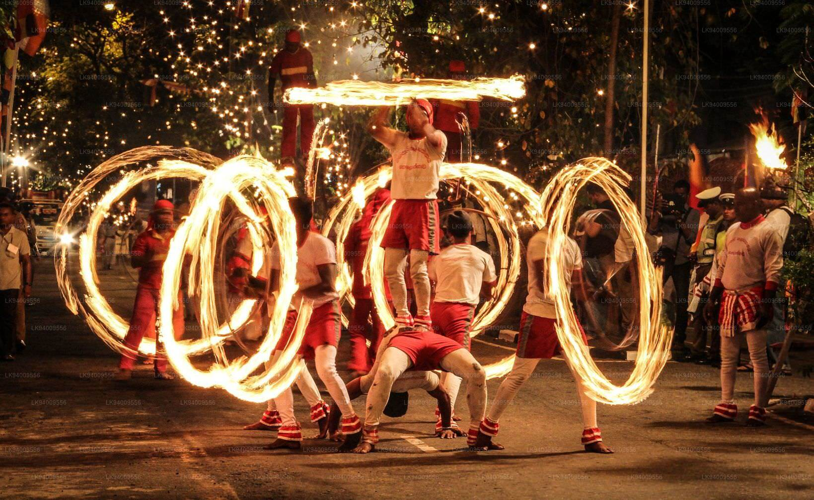
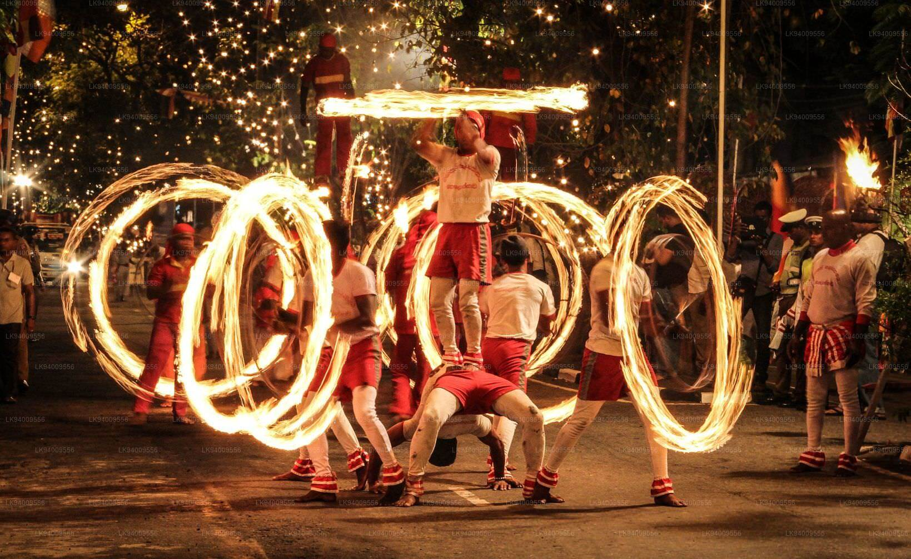

Home Wild life attractions Beaches Activities Heritage locations Hotel details Shop
AYUBOWAN !
...Welcome To SriLanka...
. Sri Lanka, formerly known as Ceylon and now known as the Democratic Socialist Republic of Sri Lanka, is a South Asian island republic. It is located in the Indian Ocean, southwest of the Bay of Bengal and southeast of the Arabian Sea, with the Gulf of Mannar and the Palk Strait separating it from the Indian subcontinent. India and the Maldives share a maritime border with Sri Lanka. Sri Jayawardenepura Kotte is the country's legislative capital, while Colombo is its main metropolis and financial center.

...Culture of SriLanka...
. Buddhism and Hinduism have heavily influenced Sri Lankan culture. Sinhalese (centered in Kandy and Anuradhapura) and Tamil (centered in Kandy and Anuradhapura) are the two main traditional cultures in Sri Lanka (centred in Jaffna). Tamils and Sinhalese have coexisted since then, and early mixing has rendered the two ethnic groups virtually indistinguishable. In ancient times, Sri Lanka was renowned for its hydraulic engineering and architectural prowess. British colonial culture has had an impact on the locals. The country's high literacy rate, high life expectancy, and excellent health standards are due to the country's rich cultural traditions, which are shared by all Sri Lankan cultures.
...Festivals...
...1.Esala perahera...
 

. Esala Perahera is a Buddhist festival held in Kandy in July and August that includes dances and adorned elephants.
...2.Sinhala & Tamil New Year...
. The Sinhalese New Year, also known as Aluth Avurudda in Sri Lanka, is a Sri Lankan holiday commemorating the Sinhalese people's traditional New Year.

. Puthandu is the first day of the Tamil calendar year and is traditionally celebrated as a feast. The event takes place on the first day of the Tamil month Chithirai, which corresponds to the lunisolar Hindu calendar's solar cycle. It always falls on or around April 14th on the Gregorian calendar. The traditional new year is celebrated on the same day throughout South and Southeast Asia, but it is known by different names depending on where you are in the country, such as Vishu in Kerala and Vaisakhi or Baisakhi in central and northern India.
...Food...
...1.Kiribath...
. Kiribath is a traditional Sri Lankan rice dish. It is made by cooking rice with coconut milk, thus the name, and is similar to a rice cake or pudding.
...2.Pittu...

.Puttu, also known as pittu, is a South Indian dish native to Kerala, Tamil Nadu, parts of Karnataka, and the Northern Province of Sri Lanka. Puttu means "portioned" in both Tamil and Malayalam. It's made of stacked steamed ground rice cylinders with coconut shavings and is sometimes filled with a sweet or savory filling. Puttu is typically served hot with either sweet or savory side dishes such as palm sugar or banana, or chana masala, chutney, rasam, or meat curries.
...Religion In SriLanka...
. Sri Lankans practice a diverse range of religions. According to the 2012 census, 70.2 percent of Sri Lankans are Buddhists, 12.6 percent are Hindus, 9.7 percent are Muslims, and 9.4 percent are Christians. Buddhism has been recognized as Sri Lanka's state religion, with special benefits granted by the Sri Lankan constitution, such as the government's obligation to defend and promote Buddhist Dharma throughout the country. In contrast, the constitution guarantees religious freedom and equality for all citizens. According to a Gallup poll conducted in 2008, Sri Lanka was the world's third most religious country, with 99 percent of Sri Lankans stating that religion is an important part of their daily lives.
...Buddhism...
. The official religion of Sri Lanka is Theravada Buddhism, which is practiced by approximately 70.2 percent of the country's population. Arahath Mahinda, the son of Indian Buddhist ruler Ashoka, led the expedition to Sri Lanka in 246 BCE, where he converted Sri Lankan King Devanampiya Tissa. King Ashoka's daughter, Arahath Sanghamitra, sent a Bodhi tree sapling from Buddha Gaya to Sri Lanka. She also established the Order of Nuns in Sri Lanka. King Devanampiya Tissa planted a sapling of the Bodhi tree known as Jaya Sri Maha Bodhi in Anuradhapura's Mahameghavana Park. Since then, the royal families have helped Buddhist missionaries and built monasteries to promote Buddhism.
...Hinduism...

. In Sri Lanka, Hinduism is mostly associated with the Tamil people and is concentrated in the Northern, Eastern, and Central Provinces. The population has decreased since the 1981 census due to exodus of Sri Lankan Tamils and repatriation of 'Indian' Tamils.
...Islam...
.By the seventh century, Arab traders had taken over much of the Indian Ocean trade, including that of Sri Lanka. Many of these traders settled in Sri Lanka and spread Islam. When the Portuguese arrived in Sri Lanka in the 16th century, many of the Arabs' Muslim descendants were persecuted, forcing them to relocate to the Central Highlands and the east coast. The Muslim Religious and Cultural Affairs Department was established in the 1980s to prevent the Muslim community from becoming isolated from the rest of the country. Approximately 9.7% of Sri Lankans now practice Islam, with the majority belonging to the island's Moor and Malay ethnic minorities.
...Christianity...

. After the British evicted the Dutch in 1796, Ceylon became a Crown colony in 1802. When the British seized control of Sri Lanka from the Dutch in the early 1800s, they brought Anglican and other Protestant missionaries with them. The Salvation Army and Jehovah's Witnesses also have a presence in Sri Lanka. The percentage of Christians has steadily declined from a high of 13% in 1891 to a low of 12.6 percent and 302,000 Christians. In 2012, they made up 9.4% of the population. By the 1980s, Christians were primarily concentrated in the northwest of Sri Lanka, as well as in the capital, where they constituted 10% of the population.